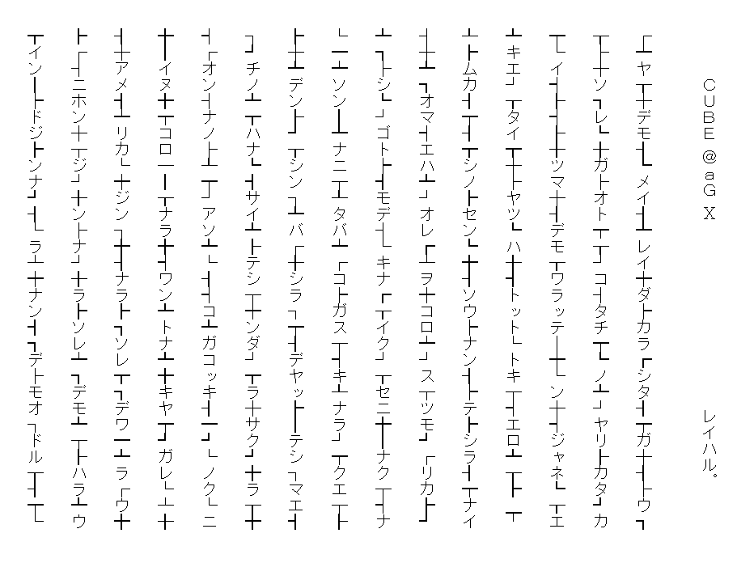

2001年に制作された本作『ＣＵＢＥ ＠ａＧ Ⅹ』は、アスキーアート風のレイアウトと断片的な言葉によって、デジタル黎明期の表現衝動を強く感じさせる実験的作品です。インターネット文化が急速に広がり始めた当時、個人の匿名性や情報の断片性が新たな表現手段として模索されていた時代背景の中で、本作はまさにその時代の「空気」を象徴しています。
「CUBE」が示唆する閉塞性や仮想的構造、「＠ａＧ」「Ⅹ」に含まれる記号的意味は、まだ未分化だったサイバースペースの混沌を投影しているようでもあります。テキスト構造の読みづらさも含め、当時の表現実験の熱意がそこに刻まれています。
なお、当ページに掲載されているものは、商業誌掲載にあたって、最終的な推敲をされる前のものです。
文字を視覚的に並べた構成によって、言葉そのものに形状としての意味を持たせ、読み手の想像力と解釈を強く促します。暴力的な語句や分断的な言い回しも含まれますが、それらは2000年当時の「過激であろうとすること自体が表現である」という価値観に根ざしています。今日の視点で見れば、コンプライアンスや倫理的配慮の観点から再考が必要な表現もありますが、時代性の証言としての価値も否定できません。
本作には、歌人・荻原裕幸の形式的影響が色濃く見られます。記号や断片を用いた前衛的な短歌表現、そしてインターネットを活用した詩的実験の精神は、本作の構造や語彙選択にも深く反映されています。
また、本作は荻原裕幸責任編集による文芸誌『短歌ヴァーサス』（風媒社）に掲載された作品でもあり、当時の短歌表現の最前線に位置づけられる一作です。掲載媒体としての『短歌ヴァーサス』は、ジャンル横断的な言語実験の場として、多くの若手表現者に影響を与えました。